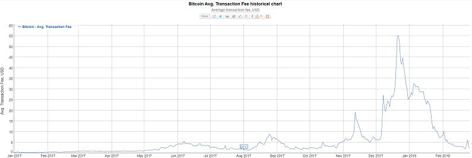
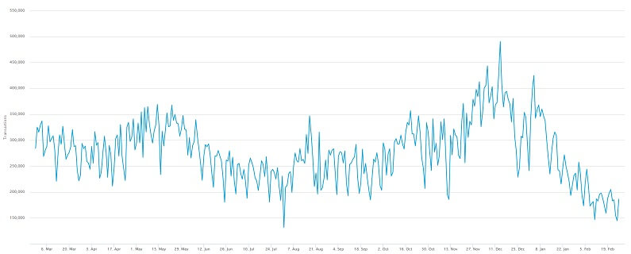

Bitcoin tranzakciós díjak

A magas tranzakciós díjak nagy válságot okoztak a Bitcoin hálózatnak. Nem is olyan régen Bitcoin tranzakciós díjak olyan magasak voltak, hogy egy csoport egy teljesen új Bitcoin-t hozott létre csak azért, hogy alacsonyan tartsák a díjakat. Ahogy a díjak emelkedtek, úgy üzletek is elkezdtek a Bitcoin fizetési lehetőségektől távolodni. Azonban ez nemrég visszafordult és régóta nem látott alacsony díjakkal dolgozik újra Bitcoin. Több mint 90%-ot estek a tranzakciós díjak a decemberi csúcsponthoz képest.
Miért estek vissza a tranzakciós díjak?
Bitcoin tranzakciós díjak USD-ben. Forrás: bitinfocharts.com
Nagy részben, a magas tranzakciós díjak egy olyan probléma volt amely megoldotta magát. Ahogy a díjak emelkedtek néhány felhasználó különböző módokat kereset, hogy hatékonyabban használja a hálózatot, néhányan pedig teljesen felhagytak a Bitcoin hálózat használatával.
Például, technikailag lehetséges egy Bitcoin tranzakció tartalmazzon több különböző fogadó félnek való utalást, úgymond összecsomagolja az utalásokat. Ez hatékonyabban, több utalást biztosít, de kevesebb helyet foglal a blokkhálózaton. Amikor a díjak alacsonyak voltak a vállalatok nem foglalkoztak ilyen optimalizációval. A díjak emelkedése miatt a vállalatok azonban kiemelt fontosságúvá tették őket.
Kriptopénz váltók mint Coinbase-nek minden tranzakciót külön fel kell jegyezniük a blokkláncra. Ez időigényes és nem túl hatékony. Egy kriptovaluta váltó ShapeShift nemrég bejelentette, hogy ezt az összecsomagoló megoldást bevezeti.
ShapeShift körülbelül a tranzakciók 2%-át bonyolítja a Bitcoin blokkláncon. Jelenleg nem tudni mennyi kriptovaluta váltó használja ezt a megoldást, szóval nehéz megmondani milyen hatása van a díjakra.
Ugyanakkor, ahogy láthattuk a magas díjaknak köszönhetően néhány cég egyszerűen nem használja többé Bitcoin-t. Valve teljesen felhagyott a kriptopénzekkel, mások pedig váltottak Litecoin, Ethereum vagy Bitcoin Cash-re ahol tranzakciós díjak sokkal alacsonyabbak voltak.
Napi Bitcoin tranzakciók száma. Forrás: blockchain.info
Bitcoin körüli hype ugyancsak csökkent az elmúlt hetekben, ami valószínűleg segített a díjak csökkenésében. Decemberben ömlött a pénz a Bitcoin piacba és az emberek többsége bármit megadott volna, hogy részese lehessen a kripto őrületnek. De Bitcoin ára azóta leesett a közel 20,000 dollárról és elérte a 6,000 dollárt a hónap kezdetén, ami azóta visszamászott 10,000 dollár környéke. A lehűlő piac természetesen kevesebb kereslettel jár ami tranzakciók és ezáltal a díjak csökkenését jelenti.
SegWit amely több Bticoin problémára is sikeres megoldást jelent. Köztük a tranzakció díjak csökkentésére is. SegWit átalakítja, hogy hogyan vannak a tranzakció adatok tárolva a blokkláncon amely növeli az egy blokkba rakható tranzakciók számát.
Az első számú kriptovaluta váltó Coinbase nemrég bejelentette, hogy teljes mértékben támogatni fogják a SegWit Bitcoin címeket ami nagyban hozzájárulhat a SegWit adaptálásához. SegWit adaptálása jelenleg 15%-nál tart, amely nagyon lassan de növekszik. Ezen a weboldalon nyomon lehet követni SegWit statisztikákat.
SegWit ugynacsak lehetővé teszi második réteg megoldások bevezetését, hogy még gyorsabbak és olcsóbbak legyenek a tranzakciók. Közülük az egyik legnépszerűbb a Lightning Network amelyet jelenleg is tesztelnek a fejlesztők. Lightning Network tranzakciós csatornákat hoz létre a Bitcoin blokkláncon kívül amit csak a csatorna létrehozásánál és bezárásánál kell azt rögzíteni a blokkláncon, ezáltal a felek bármennyit utalhatnak egymás között ilyen fizetési csatornákon belül. Statisztikákat, információkat Lightning Network-ről itt és itt találsz.


2018. Február 27.